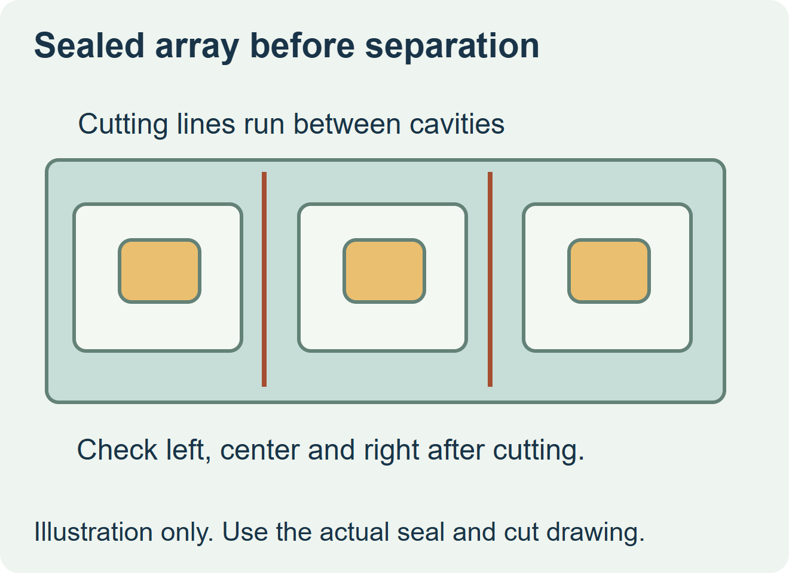
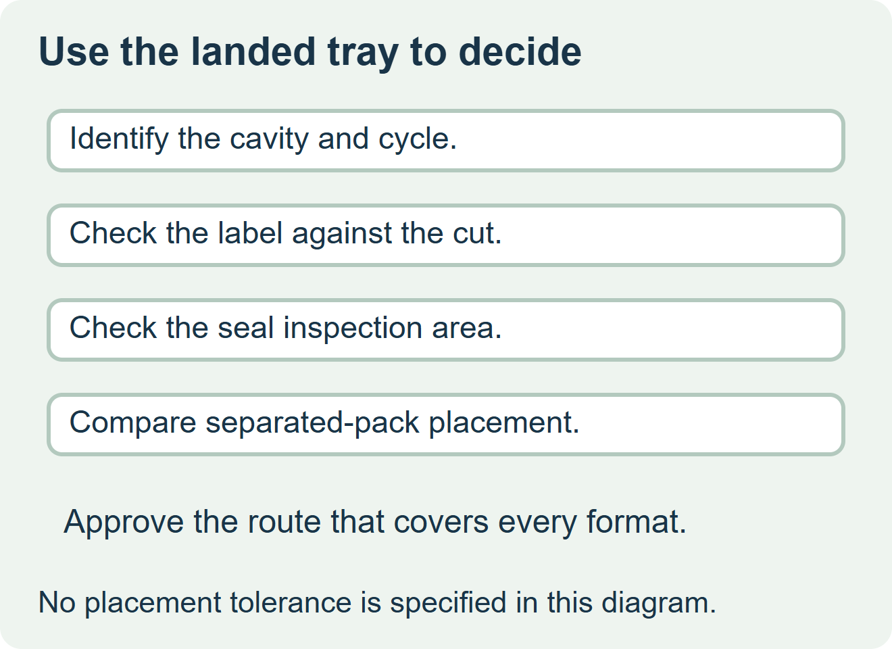

Choose cross-web application before separation if the installed line can place the label safely on every intended cavity of the sealed array. Choose individual-pack application if the cut trays can be presented more reliably on a conveyor. Prove the proposed position on the edge cavities as well as the center. The line owner should define which seal and cut areas must stay clear.


Map the packaging cavities and the supplier’s roll separately
Number the cavities on the packaging plan from the operator’s agreed viewing side. Show the web travel direction, cut lines, seal land and intended label footprint. Use a separate roll drawing for the label liner, pitch, leading edge and unwind. Multiple cavities on a pack web do not imply that the supplied label roll needs multiple lanes.
HM Systems describes a cross-web applicator for top or underside placement on thermoformed packs. MULTIVAC also documents cross-web application on its thermoforming equipment. The working configuration determines which cavities are reachable. Ask the equipment owner to identify the approach and the actual station for the independent-conveyor alternative. HM Systems cross-web equipment and MULTIVAC cross-web applicator documentation
| What the packed trial shows | Buying action |
|---|---|
| Every active cavity meets the approved limits after cutting | Approve the cross-web route with the matched label and packaging-web drawings. |
| Edge cavities approach the cut or obstruct inspection | Ask whether the operator can correct the position or the label can be resized. Recheck every active position. |
| Separated trays offer a more consistent landing and orientation | Price individual-pack labeling with its support, orientation and inspection requirements. |
| A cavity or tray presentation stays unresolved | Keep that format out of production approval until the line owner confirms a workable route. |


Keep cavity identity on the finished samples
At a trial, label the tray samples in the record by cavity and cycle. Review the assembled packs after separation. Record whether the printed area and full label remain inside the approved landing, whether the cut passes clear of the label and whether the required seal view remains visible. Ask the line owner which starts, restarts, format changes and production speeds represent this order.
For a hypothetical chilled snack tray, the center cavity has ample clearance while the left outer label moves closer to the edge on a restart. Collect samples from that position under the agreed trial plan before approving the whole array. If the project moves downstream, repeat the comparison using the real separated tray support and orientation. A downstream station must be able to present the actual packed trays consistently.
Release the label drawing against the verified line configuration
Attach the accepted cavity or conveyor map to the purchase brief. Note affected mold and film versions, the applicator format, the exact label construction and the tray faces checked. Review a changed mold, label size or cut pattern before reusing the decision. The packaging team owns seal integrity and the applicable material and contact assessment.
Discuss the unresolved label requirement
Send the sealed web and cut drawing, filled trays identified by cavity, intended station and model, approved label fields, actual surface conditions and quantities by format. Review food label options and prepare a label specification inquiry. The contact page opens an email draft and lists email or WhatsApp for attachments. Supply, proof options, testing, pricing and timing require project confirmation.